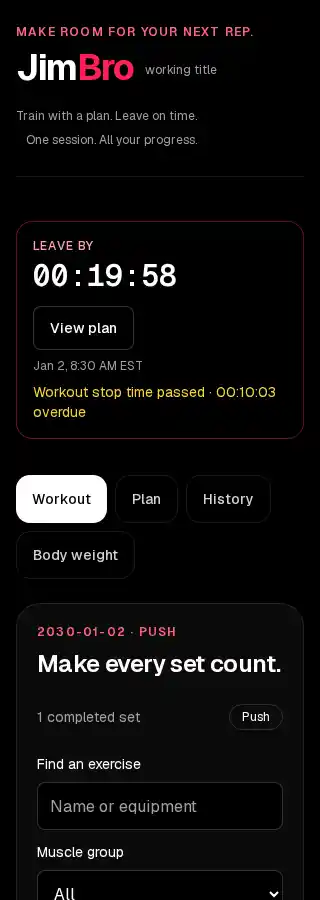

When should I stop?
Work backward from class or work. Preparation, commute, and buffer time produce a workout-stop deadline and a separate departure time.
Explore the original planner ↗Keep the set.
Keep the commitment.
A gym companion built from two earlier ideas: LeaveBy’s timing plan and GymLog’s logging after a completed set. One persistent session connects the work you do with the time you have.

My routine often runs from the gym to school, then work. The hard part is making room for what happens between them.
A workout does not end when the last set is done. There is still time to shower, change, pack, commute, and arrive before the next commitment. Meanwhile, recording the workout should not interrupt doing it.
Feedback on the earlier projects pushed the direction toward a single companion. Instead of checking a separate planner and logger, the schedule could stay in view while completed sets were recorded.
JimBro carries forward the purpose of both projects
and gives them one session to work with.
Work backward from class or work. Preparation, commute, and buffer time produce a workout-stop deadline and a separate departure time.
Explore the original planner ↗Lift first, then record the set. Clear repetitions, load, units, and correction controls keep saved work separate from unfinished input.
Explore the original design ↗The earlier case studies and GymLog prototype remain available. JimBro is a new implementation of their combined direction, rather than two separate apps placed side by side.
Start with the next commitment and the time needed to get there. Once the plan is saved, the logger takes focus and the countdown stays docked alongside it.
Moving between exercises, workout history, body weight, and the full plan keeps the same active session. Preparation and departure guidance appear when the deadlines arrive. Actual stopping, leaving, and arrival are recorded only when the person confirms them.
IndexedDB saves the active session and recorded history in the browser. Reloading resumes that workout; it does not silently start another one.
The countdown is calculated from absolute timestamps. Editing an estimate recalculates the plan while preserving the session and its completed sets.
A deadline can tell you it is time to leave. It cannot claim you have left. Separate confirmations keep the planned schedule honest about what actually happened.
The first step was documenting what both ideas needed to share: a session ID, the timing plan, completed sets, and a lifecycle that continues after exercise ends.
A pure scheduling engine resolves the commitment to a timestamp and derives stop, departure, and arrival targets. The browser storage layer handles saving, recovery, conflicting changes between tabs, and visible failure states.
The interface brings those parts together with a categorized exercise catalog, editable completed sets, day labels, workout history, and dated body-weight records. A dedicated desktop column keeps the countdown clear of the logger; narrow screens keep it above the workout.
The countdown remains visible while the rest of the interface stacks into one column.

Checks covered timing calculations, dates across midnight, daylight-saving changes, reload recovery, two tabs sharing a session, save failures, correction, and narrow-screen focus.
The release passed 27 browser checks against the live app, alongside the existing calculation tests, core tests, lint, type checking, and a production build. The native storage fixture contains 18 cases within the browser suite.
Automated checks do not establish that the app reduces lateness or feels right during a real workout. Human peer evaluation remains the next step.
Records stay in this browser; clearing site data removes them. Alerts work in the foreground, with optional sound and visible text. Accounts, cloud sync, and guaranteed background alarms are deferred. JimBro is a working title.
Plan your next commitment, start a session,
and log the work after each completed set.
Browser-local records. Keep the app open for foreground alerts.